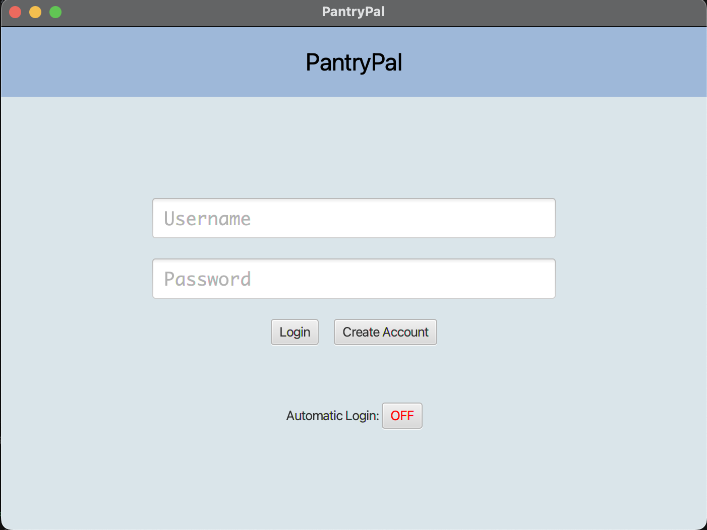
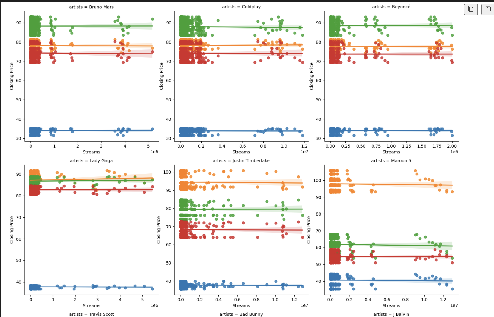

Mathematics-Computer Science B.S

About Me
Hello! My name is Adrian Wong. I am a Fourth Year Mathematics-Computer Science major. I am aspiring to be a Full Stack Software Engineer. I am passionate about developing Software applications that can help people in their daily lives. I am currently looking for a Software Engineering entry-level position. I am proficient in Java, Python, HTML, CSS, and JavaScript. I have experience in developing full-stack applications using JavaFX and MongoDB. My academic journey at ucsd has been an amazing experience. I have learned from world class professors with the opportunity to work on projects that have helped me grow as a Software Engineer. I am excited to see what the future holds for me.
Bio
- Age: 21
- Location: San Diego, California
- Education: University of California, San Diego
- Interested Positions: Software Engineer, Web Developer, Backend Developer
Resume
Portfolio
Project 1 PantryPal
- Developed a full-stack JavaFX GUI application with a MongoDB backend, integrated with ChatGPT and Whisper APIs to generate food recipes from transcribed audio input, enabling hands-free meal planning
- Wrote 100+ unit and integration tests, resulting in catching and fixing of 40+ bugs prior to production, significantly improving application stability and performance
- Enhanced DALL-E food image generation accuracy by 85% by incorporating KeyBERT for keyword extraction, leading to more relevant and visually accurate results
- Led Agile Development team of 5 by managing daily stand-ups, conflict resolution, and task tracking using GitHub Actions and Projects to meet project milestone deadlines successfully
Project 2 (Data Analysis Project)
- Performed comprehensive exploratory data analysis (EDA) on 100,000+ rows of Super Bowl Halftime Show data, revealing minimal correlation between the popularity of performers and advertiser stock prices
- Developed linear regression models with Python to analyze correlations between artist popularity, ad exposure, and financial performance of advertising companies before and after the show, achieving 90% accuracy in stock price predictions
- Utilized Python libraries like Pandas, NumPy, Seaborn, and Matplotlib to isolate key variables and provide statistical visualization against show popularity, improving data accuracy and analysis efficiency by 80%
- Led collaboration for a team of 5 using an agile workflow, distributing tasks such as data gathering, hypothesis formulation, analysis, and revisions to ensure timely delivery
Let's Get In Touch!
Contact:
- Personal Email: adrianwong055@gmail.com
- School Email: adw004@ucsd.edu
- Phone Number: (562)-441-8485
- LinkedIn: linkedin.com/in/adrian-wong1/